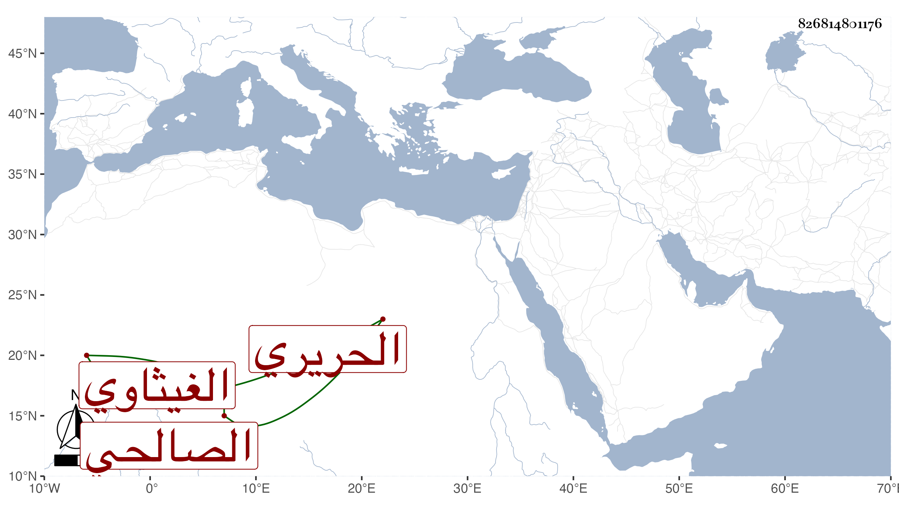

0902Sakhawi.DawLamic.ITO20230111-ara1.EIS1600.826814801176
Biography ID: 826814801176
797
علي بن عبد الرحمن بن حسن نور الدين الغيثاوي الصالحي الحريري ويعرف بالصالحي . كتب عنه العز بن فهد قصيدة في الشرف بن عبد الحق القاضي أولها : لو كان حبي عاذلي في ظلمه وقصيدة عجاجة تقرأ على وجوه شتى مذكر ومؤنث جمعية وفردية أولها :
| لو عرفتم كلامنا | ما جهلتم مقامنا |
وأشياء غير ذلك .
